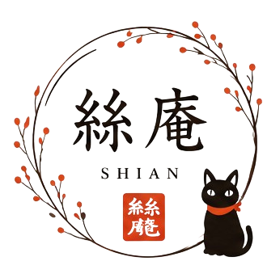

譜面を更新したら再追加で更新してください
選んだ譜面だけを、好きな順番で連続表示します。
チェックを外した項目は、この閲覧時だけ非表示になります。保存済みの文化譜データは変更しません。
50音順に正しく並べるため、この曲の「よみ」だけ入力してください。最初の登録時だけ必要です。
更新すると、譜面帳に登録されている同名の文化譜データを今回選んだJSONで置き換えます。
譜面帳にある元の譜面は移動・削除されません。セットリストには譜面の参照だけを保存します。